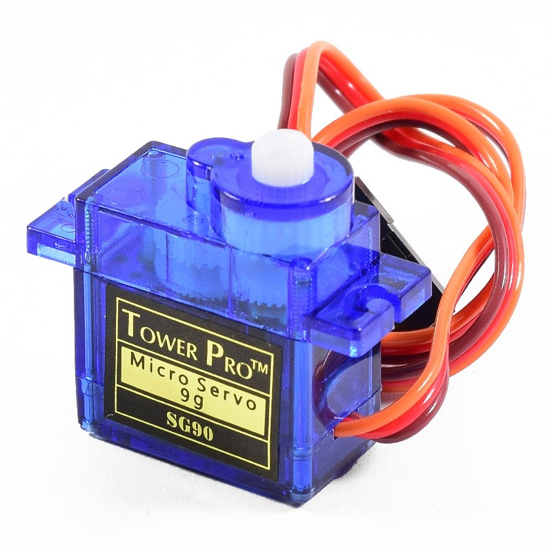
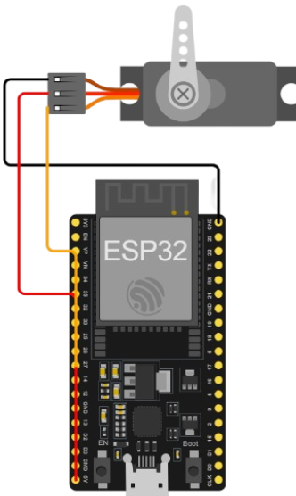

¿Qué es un servo motor?
El servomotor es un actuador electromecánico que integra un motor DC, un tren de engranajes, un potenciómetro y un circuito de control en un sistema cerrado, permitiendo el posicionamiento angular preciso del eje en un rango típicamente de 0° a 180°, mediante señales de modulación por ancho de pulso (PWM), lo que posibilita su uso en aplicaciones que requieren control exacto de posición, velocidad y movildiad.

Código de colores del Servo motor
Los servomotores estándar de tres cables presentan la siguiente codificación:
- Marrón (GND): Conexión a tierra para referencia de voltaje.
- Rojo (VCC): Alimentación eléctrica, usualmente entre 5V y 6V, proveniente de la fuente o microcontrolador.
- Naranja (Señal PWM): Entrada de control para definir el ángulo del eje mediante pulsos digitales
Para que nos sirve un Servomotor
El servomotor se emplea para el control angular de actuadores en robótica, automodelismo, sistemas automatizados, impresión 3D y educación, destacándose por su capacidad de mantener posiciones precisas bajo retroalimentación continua, esencial en proyectos que demandan exactitud y repetibilidad en el movimiento.
Pasos Teóricos para Hacer Mover un Servo Motor con ESP32
- Selección del pin GPIO
Se selecciona un pin GPIO capaz de generar señal PWM, como el GPIO 18 del ESP32, para enviar pulsos que controlan el ángulo del servomotor. - Conexión física del servomotor
El cable rojo (VCC) se conecta a 5V, el marrón o negro (GND) a tierra, y el amarillo o naranja (señal) al GPIO 18 para recibir la señal PWM que posiciona el eje. - Configuración del programa
Se incluye la librería Servo.h, se instancia un objeto servo y se asigna el pin de control mediante myServo.attach(18); en la función setup(). - Control del movimiento angular
El servomotor se posiciona usando myServo.write(ángulo);, donde el ángulo varía típicamente entre 0° y 180°, con pausas para permitir el movimiento. - Carga del programa
Se conecta el ESP32 vía USB, se selecciona la placa y puerto en Arduino IDE, y se compila y sube el código; una vez cargado, el ESP32 ejecuta el control del servomotor según la programación. - Gráfica
Movimiento de un servomotor: https://wokwi.com/projects/437187016658285569